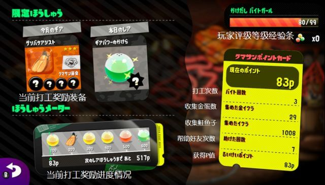
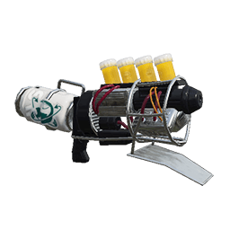
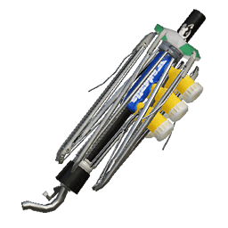
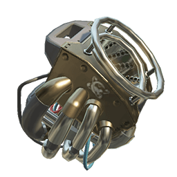

简介
打工是喷射战士2中的多人合作模式(PVE)，最多可以四个玩家一起组队，能够获得金币、装备、技能碎片和饮料兑换票等物品。
当玩家等级达到4级时，就会对玩家解锁该模式。在广场按X打开菜单，选择左下角熊先生商会按钮或是直接走到广场左侧通道尽头，就可进入熊先生商会打工。
商会内部
个人信息
规则
打工规则
1.每局打工分为三个回合(WAVE)，每个回合100秒,包括玩家在内4人组成打工小队，完成每回合收集金蛋的目标。
2.玩家们击败一批批怪物并将金蛋放入箩筐中完成回合目标。如果每回合结束没有完成回合目标或玩家全部阵亡，则打工失败。
3.不能携带自己的装备和武器，全由打工方提供。
4.商会每次开放打工都会变更打工地图和分配给玩家的武器。每回合，系统会在玩家中随机分配武器。每局打工，只能使用特殊武器两次(砸地，水枪，飞机，rush)。
5.只有击倒BOSS才会出现“金蛋”,如果金蛋在一定时间内没有被拾取，就会出现小鲑鱼来抢夺。
6.玩家死亡后会暂时变成救生圈(金蛋不丢失，但无法将金蛋放入箩筐中)，其他队员可以喷墨复活，刚复活有短时间的无敌时间。每名玩家每次只能携带一枚金蛋。
7.顺利完成每局三回合(WAVE)，可以提升玩家评级。随着评级提升，每局打工结束后获得的P值也越高，但难度也加大。（P数关系奖励）

打工等级
| 打工评级 | 评价条 | P数奖励比率 |
|---|---|---|
| 实习(けんしゅう)(Intern) | 0~99 | 90% |
| 学徒(かけだし)(Apprentice) | 0~99 | 90%~110% |
| 兼职(はんにんまえ)(Part-Timer) | 0~99 | 115%~135% |
| 全职(いちにんまえ)(Go-Getter) | 0~99 | 140%~160% |
| 熟练(じゅくれん)(Overachiever) | 0~99 | 165%~185% |
| 达人(たつじん)(Profreshional) | 0~999 | 190%~435% |
打工评级点数说明
当玩家通过三个回合后，评价点数会上升20点。如果第一波失败，则点数下降20点;如果第二波失败，则点数下降10点;如果第3波失败，则点数保持不变。当分数到达满分(非达人时),就会升阶到下一头衔且初始分数为40。反之,若是分数为0时,自动降级。
需要注意的是,假如是组队打工,以等级最低的队友为基准,三波完成后,此队友可以获得加分奖励,等级高的玩家只能够掉分而不能加分。
奖励
玩家可以在每一局打工结束后，根据局内运蛋数和奖励加成获得相应的积分。在前面1200积分内，每100积分可以获得一个扭蛋（这就是低保），1200之后每200积分获得一个扭蛋。
扭蛋可以开到限定的服装,金币,饮料卷或者碎片
装备技能是随机的,如果玩家在此之前已经拥有,可以选择用新装备替换或者把新装备出售。出售后可以得到金币或者技能碎片。
扭蛋存储上限时99个,请记得在溢出之前领取奖励。
地图
总共有5张打工模式专属的地图
大坝
地图介绍.......................
破难船
地图介绍.......................
集落
地图介绍.......................
工坊
地图介绍.......................
方舟
地图介绍.......................
武器
总共有4把打工模式专属的武器
熊泡
武器介绍........................
熊伞
武器介绍........................
熊狙

武器介绍........................
熊桶
武器介绍........................
BOSS
BOSS是鲑鱼军团中具有特殊能力的强大个体。
BOSS在每个回合都会大量出现，击败后会掉落金蛋，这是获取金蛋的唯一手段。同一种BOSS在场上最多存在3只。打工难度越高，每一波需要提交的金蛋越高，BOSS刷新的速度越快,每次BOSS刷新都会伴随着大量普通鲑鱼出现。
鲑鱼军团
普通鲑鱼
绿帽

特征：移动缓慢；身体无法收到墨水伤害，接近玩家后会有3~4秒在头顶制造出一个绿球炸弹投向人群，炸弹距离不远但是伤害高，直接击中会一击毙命。
弱点：头顶的炸弹。
处理方法：在头顶制造绿球炸弹时，集中攻击头顶绿球炸弹使其爆炸(绿球炸弹离开了爆弹 头部就无法受到伤害)。第一次未成功涂完，第二次会继承上一次的进度，根据绿球外部颜色就能判断进度情况。
推荐打法：一般由射程较长的武器处理，例如狙和加特林。近距离释放大招砸地可以直接把绿帽收拾。
垃圾桶
特征：远程攻击，携带两个垃圾桶。攻击时会打开盖子，每个垃圾桶都会发射1枚锁定玩家的追踪导弹。不攻击时会盖上盒子，无法对其造成伤害。
弱点：释放导弹时打开盖子的垃圾桶。
处理方法：垃圾桶准备攻击时，垃圾桶盖子会打开，可以将副武器炸弹丢入他的两个垃圾桶内，一个炸弹可以破坏一个垃圾桶。
推荐打法：垃圾桶威胁十分大，被锁定队员不要移动到队员身边或关键的过道，由于同时场内最多可以存在3只同样的BOSS，建议只需要破坏垃圾桶的其中一边。就算同时拥有3只单边垃圾桶威胁也比两只健全的垃圾桶小，把余力放到其他BOSS身上。在无法及时消灭垃圾桶的时候，可以是用水枪大招瞄准垃圾桶中间的驾驶舱，将其消灭。
蛇(龙)
特征： 身体由许多喷墨器组成，身体像长蛇一样一边移动一边喷墨攻击，对场地有极大影响。会锁定单个目标追踪；除了高压水枪以外的特殊武器、副武器、子弹都无法穿过身上的墨水帘。
弱点：尾部的驾驶舱。
处理方法：在蛇（龙）追踪队友时，其他队友集中火力攻击尾部的驾驶舱。
推荐打法：被追的队员不要往人群扎堆，尽量往有台阶的地形上引，当蛇（龙）跟上台阶后,可以跳下来攻击尾部。
雨伞
特征： 用雨伞来飞行的鲑鱼，不攻击时会把伞盖在身上，无法受到伤害。攻击时会坐在在伞上，投出可以释放酸雨云的雨弹，雨弹可被攻击击中反弹。
弱点：鲑鱼本体。
处理方法：在雨伞释放雨弹的时候集火本体。
推荐打法：在雨伞快要释放雨弹的时候往雨伞脚下扔副武器，露出本体后攻击本体，多数武器都可以通过这个流程一次击倒雨伞。高级打法是通过攻击雨伞投出的雨弹，使其反弹到雨伞上，可以瞬间将其消灭，反弹雨弹也可以消灭其他BOSS，此方法过于困难，不建议新手尝试。
塔
特征：用由许多锅叠加成的一座移动塔，一只狙击手鲑鱼站在塔顶。移动十分缓慢，基本在河边活动；远距离攻击，塔顶的狙击手鲑鱼会发射墨水射线，可越过障碍物墙壁等(类似玩家特殊武器高压水枪)，威胁十分大，经常是团灭的罪魁凶手。
弱点：塔顶的鲑鱼狙击手。
处理方法：把塔身破坏，让鲑鱼狙击手落在底座的煤气灶上。
推荐打法：队伍里射速较快的或者比较灵活武器（毛笔），第一时间就赶到对其进行连续攻击。但是不建议多人同时去打，因为激光是对个人的集火攻击，一起行动可能导致牵连到队友。
车子
特征：发出像摩托车一样轰鸣声迅速移动，正面被外壳保护；移动路径会留下墨水，会自动转向攻击他的玩家方向，并向其发起冲锋。
弱点：没有被外壳保护的背后。
处理方法：持续攻击外壳造成坏损，车子就会停下来，此时可以攻击背部的驾驶员鲑鱼。
推荐打法：被锁定的玩家引导车子到离交付金蛋近的地方，攻击停下车子后，攻击车子背面驾驶员。或者与队友配合，车子目标在攻击外壳的时候，其余队友攻击车子背后，消灭后快速收集金蛋。
吃人鱼

特征：潜伏在墨水中快速移动，同时可以在墙壁上移动，移动时墨水上会出现一个浮标。首次出现时或者攻击完一次之后，会锁定距离最近的玩家。接近玩家后，玩家脚下会出现一个绿色的光圈，代表鲨鱼即将出现的地方，之后会从墨水中跳出攻击玩家，只要命中，一击即死。
弱点：无。
处理方法：根据墨水中移动的浮标判断位置，在吃人鱼即将出现时候离开绿圈，吃人鱼出现后集火攻击，也可以预判位置丢副武器炸弹，让吃人鱼吃下炸弹。
推荐打法：被锁定的玩家引导吃人鱼到离交付金蛋近的地方，在吃人鱼攻击离开绿圈的时候丢副武器炸弹，让吃人鱼吃下炸弹，消灭后快速收集金蛋。